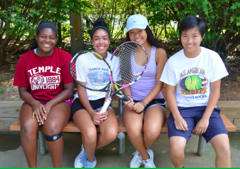

Wiggles is an older dog so she enjoys warm places a lot.  These camp counselors love playing tennis and helping children Klimt is one of my favorite painters because he portrays emotions brilliantly and utilizes gold, my favorite color.